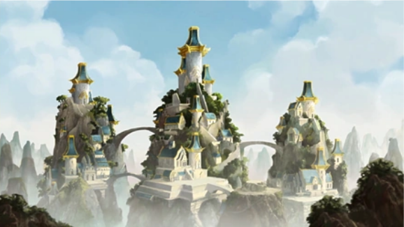

|  |
What is airbending?Air bending is one of the four elemental bending arts with the aerokinetic ability to manipulate and control air. Air is the element of freedom. The Air Nomads detached themselves from worldly concerns; finding peace and freedom to solve their daily problems in life. Airbenders seek spiritual enlightenment (self-realization/inner peace) as a result, all children born into the Air Nomads were Airbenders. The first-ever air benders learned from the Flying Bison. Air benders are constantly moving and are off the ground and bend through one’s motion of hands and feet. Alternate styles of airbendingThe Air Nomad GenocideBefore the Hundred Year War, Fire Lord Sozin knew that the next avatar would be born an Air Nomad, and toke advantage of the Great Comet (or Sozin’s comet during the 100 year war) to wipe out all the air nomads. Fire Lord Sozin had succeded, however before the genocide, Aang (the avatar) had left the Air Nation due to the pressure of being the avatar, becoming the last airbender. Return to the main page or the return to the top of the page. HTML Validator |